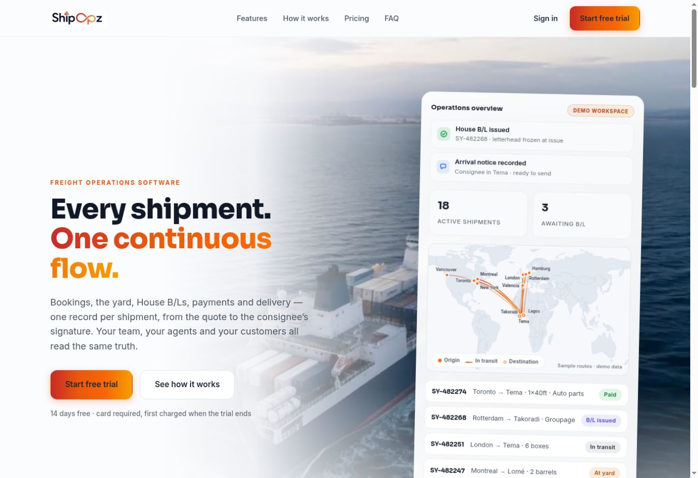
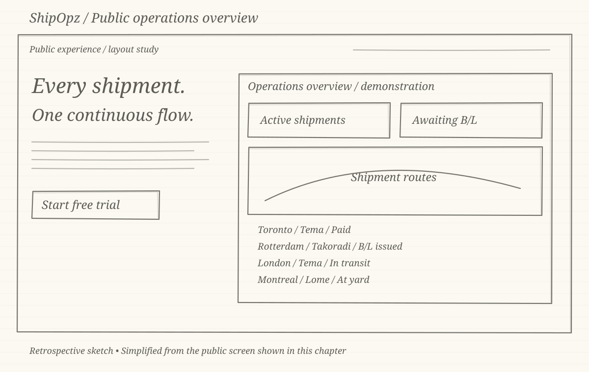
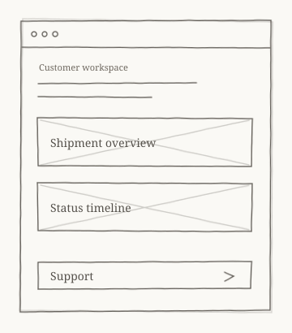
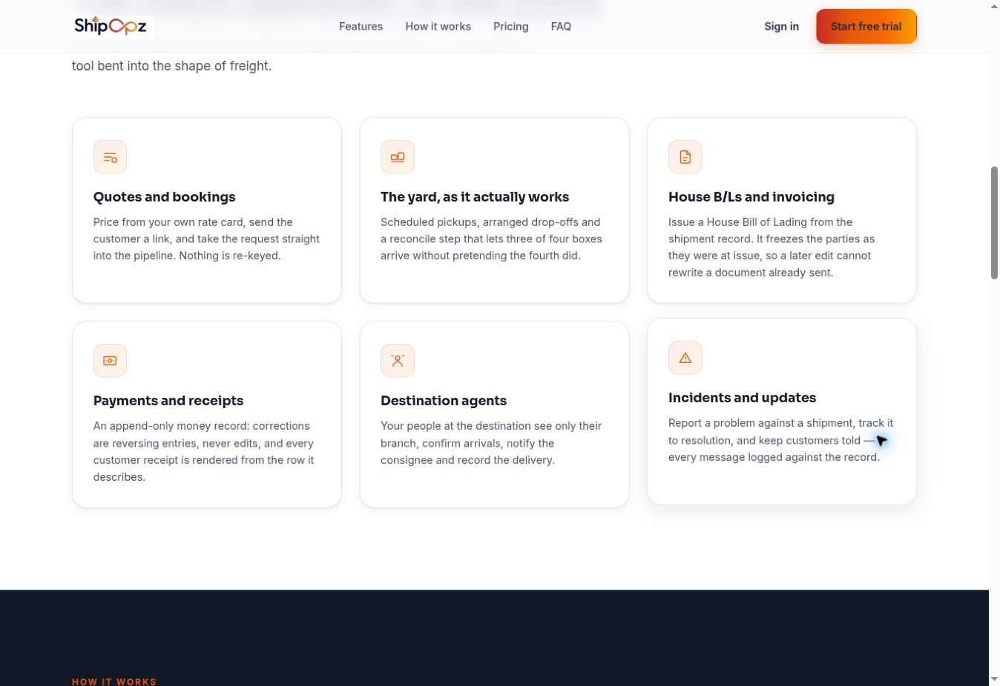
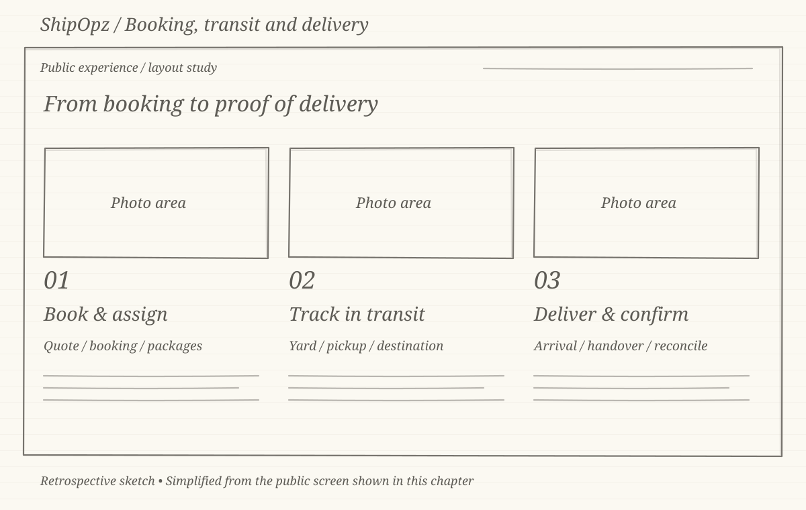
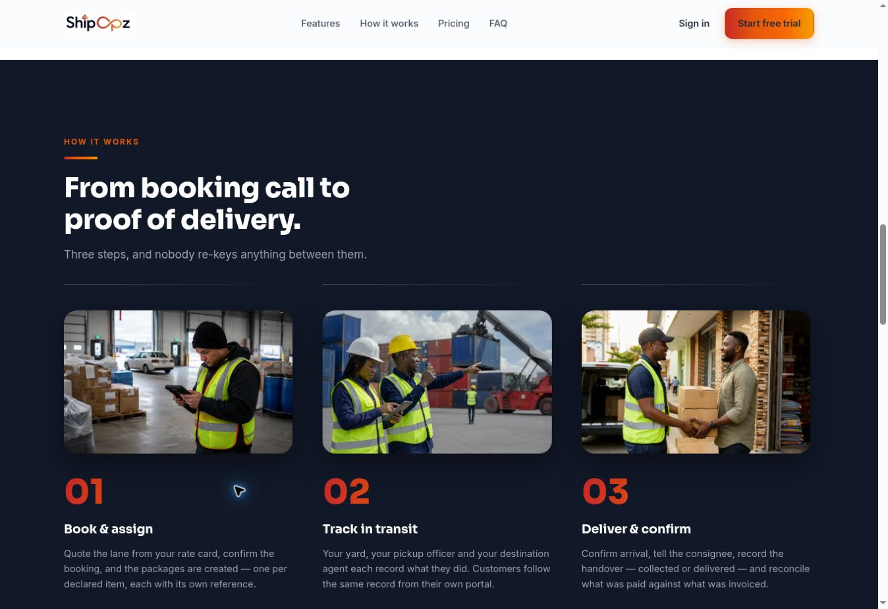

CASE STUDY 03 · FREIGHT OPERATIONS
ShipOpz freight operations
Connecting booking, customer and operations journeys. My contribution brought together strategy, rebrand direction, requirements, walkthroughs and user workspace testing.
Visit ShipOpzTHE LIVE PUBLIC WEBSITE

The sketches are retrospective layout studies created for this portfolio. They simplify the matching public screens and are not original design-stage artefacts.
01 / THE CHALLENGE
Connect the work on both sides of a shipment.
A customer’s booking becomes an operational task for a freight team. ShipOpz needed to make the handoffs understandable across booking, tracking and delivery.
I contributed strategy, rebrand and UX direction, developed requirements and walkthroughs, and tested the user workspace. The work kept the customer and operations journeys connected.

02 / THE OPERATIONS VIEW
Put the shipment context together.
The homepage demonstration brings summary counts, route context and shipment status into one view. It introduces the relationship between the shipment and the work still to be completed.
For UX direction, the priority is clarity at the handoff: a status should help the next person understand what happens next. The image communicates that intention rather than proving the private workspace behaviour.


03 / PLATFORM STRUCTURE
Keep related operations in the same story.
The public platform section groups quotes and bookings, yard operations, House Bills of Lading and invoicing, payments and receipts, destination agents, and incidents and updates.
This is a useful structure for discussing requirements: the booking journey must account for the documents, money, responsibilities and exceptions that follow it. My walkthroughs helped make those relationships concrete for the team.


04 / THE SHIPMENT JOURNEY
Carry the context through to delivery.
The three-step presentation follows a shipment from booking and assignment through transit to arrival and handover. Each step identifies a different responsibility while keeping the shipment as the connecting record.
The product focus is the transition between customer needs and operational actions. Requirements, walkthroughs and workspace testing give the team a way to discuss that complete flow.
05 / DELIVERY AND LEARNING
Bring strategy and delivery into one conversation.
The rebrand and UX direction needed to support the same product story. I contributed requirements and walkthroughs that connected the booking, customer and operations journeys to delivery.
These October 2026 captures show the public website and its illustrative demonstration. They do not establish shipment volumes, processing-time improvements or the behaviour of a signed-in account.
More from my portfolio
LET’S CONNECT
Have a product challenge?
I’m happy to discuss product management, UX/UI and digital delivery.
t02ft22@gmail.com